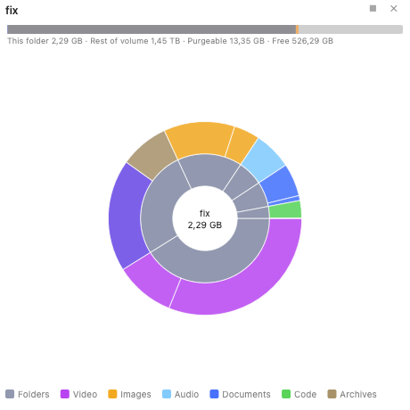

Mappa del disco
Mappa del disco è un plugin integrato che mostra, a colpo d'occhio, cosa sta occupando spazio in una cartella o su un intero volume. Analizza la cartella scelta e disegna ogni elemento dimensionato in proporzione allo spazio che occupa realmente sul disco, così i maggiori divoratori di spazio risaltano immediatamente. Potete addentrarvi nelle cartelle, vedere come la vostra analisi si concilia con lo spazio libero, eliminabile e nascosto del volume, e fare pulizia direttamente dalla mappa.
Avviare un'analisi
- Nel pannello attivo, andate alla cartella (o al volume) da misurare.
- Scegliete Comandi ▸ Mappa del disco: analizza la cartella corrente.
- La vista Mappa del disco si apre a destra e analizza in background, mostrando un conteggio in tempo reale di elementi e byte. Le cartelle grandi si completano in pochi secondi — l'analisi legge in blocco i metadati delle directory e lavora su più core della CPU.
 (Figura: la vista treemap, colorata per categoria di file, con la barra del volume in alto e l'elenco dei file più grandi a destra.)
(Figura: la vista treemap, colorata per categoria di file, con la barra del volume in alto e l'elenco dei file più grandi a destra.)
Leggere la mappa
- Ogni blocco (treemap) o segmento ad anello (sunburst) è dimensionato in base alla dimensione effettiva su disco dell'elemento, così l'immagine corrisponde a ciò che riportano il Finder e il sistema.
- I blocchi sono colorati per tipo di file — video, immagini, audio, documenti, codice, archivi, app, immagini disco — con una legenda lungo il bordo inferiore. Nelle impostazioni potete passare a una mappa di calore per dimensione.
- Fate clic su una cartella per addentrarvi; il percorso in cima mostra dove vi trovate e il pulsante ◂ vi fa risalire.
- Passate il puntatore su un blocco qualsiasi per vederne il percorso completo, la dimensione e il conteggio degli elementi.
Due viste: treemap e sunburst
Mappa del disco offre due visualizzazioni e potete passare dall'una all'altra con il pulsante ◎ / ▦ nell'intestazione o nella pagina delle impostazioni:
- Treemap — rettangoli annidati, i più densi per individuare i singoli file più grandi.
- Sunburst — anelli concentrici (uno per ogni livello di profondità della cartella) attorno alla cartella corrente, i migliori per vedere come lo spazio è distribuito su un albero profondo.

(Figura: la vista sunburst — il disco interno è la cartella corrente e ogni anello è un livello più profondo.)La barra del volume
La barra in cima concilia la vostra analisi con l'intero volume:
- Analizzato / Questa cartella — quanto occupa la cartella analizzata.
- Nascosto (alla radice del volume) o Resto del volume (per una sottocartella) — tutto ciò che non è in questa analisi, incluse le cartelle protette dal sistema, gli altri utenti e le istantanee.
- Eliminabile — spazio che macOS può recuperare automaticamente, per lo più istantanee locali di Time Machine e cache.
- Libero — spazio disponibile in questo momento.
Quando il volume ha istantanee locali, la barra mostra un elemento · N istantanee (ⓘ); fateci clic per un elenco di sola lettura, con un suggerimento a gestirle in Utility Disco o Time Machine. Mappa del disco non elimina mai le istantanee da sé.
File più grandi
Attivate Mostra l'elenco dei file più grandi per vedere i file più grandi nella cartella corrente ordinati per dimensione, ciascuno con un pallino colorato per la sua categoria. Fate clic su uno per evidenziarlo sulla mappa.
Fare pulizia dalla mappa
Fate clic destro su un blocco qualsiasi per le azioni:
- Apri nel pannello sinistro / Apri nel pannello destro — mostra l'elemento in un pannello di file.
- Mostra nel Finder.
- Sposta nel Cestino — elimina solo quell'elemento; la mappa si aggiorna senza una nuova analisi completa.
Per rimuovere più elementi in una volta, usate il Raccoglitore: clic destro ▸ Contrassegna per il Raccoglitore su ciascun elemento, poi fate clic sul pulsante 🗑 N nell'intestazione per spostare tutto ciò che avete contrassegnato nel Cestino in un unico passaggio confermato.
Impostazioni
Mappa del disco aggiunge una propria pagina alla finestra delle Impostazioni (Configurazione ▸ Impostazioni ▸ Mappa del disco):
- Stile del grafico — treemap o sunburst.
- Codifica dei colori — per tipo di file (categoria) o per dimensione (mappa di calore).
- Resta sul volume di partenza — non passare ad altri dischi montati.
- Mostra la barra del volume e Mostra l'elenco dei file più grandi.
Le modifiche si applicano immediatamente a una Mappa del disco aperta.
Note
- Mappa del disco misura la dimensione allocata (su disco) e conta i file con collegamento fisico una sola volta, così i suoi totali coincidono con lo spazio usato del volume anziché sovrastimarlo.
- Per impostazione predefinita l'analisi resta sul volume di partenza, quindi non si sposterà su altri dischi montati o condivisioni di rete.